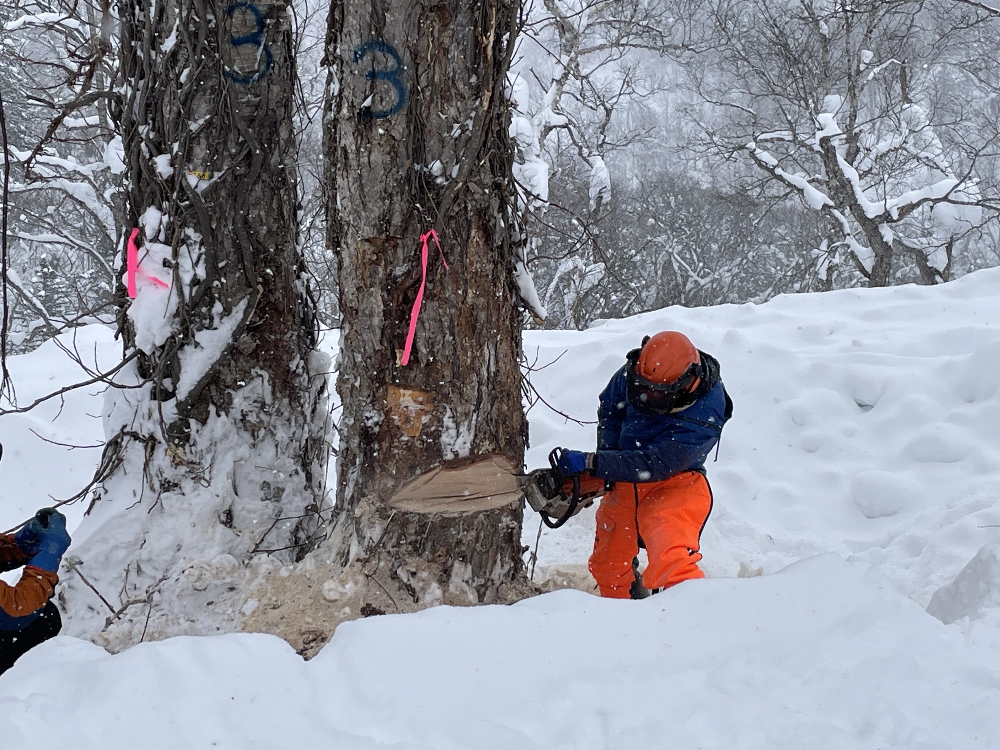
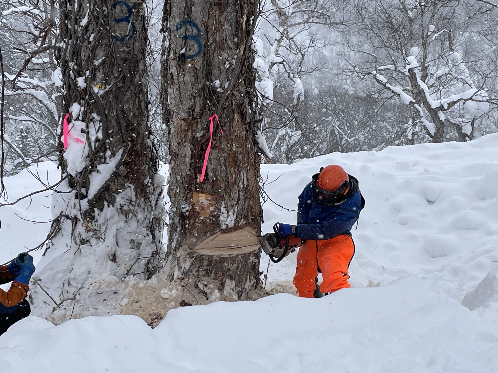

吉田 俊也
北海道大学北方生物圏フィ－ルド科学センタ－教授 博士（農学）/造林学。木材資源の利用と生態系の保全との両立を目措した林業について研究。日本林業の主流である皆伐・一斉造林による針葉樹人工林だけでなく、北大研究林が長期にわたって実践してきた天然林・広葉樹混交林の択伐（抜き伐り）や天然更新（自然プロセスによる樹木再生）を研究課題として、近年はシラカバなど多くの樹種を対象に家具・クラフト・建築など木材利用のステークホルダーと共同した取り組みを進めている。
森時間で考えるネイチャーポジティブ
100年先を見据え未来を描く。
森林生態系の長期視点で未来をデザインする、2泊3日の集中プログラムです。森林の"長い時間軸"を五感と体で感じ取るために、現場観察と研究者との対話を行います。そこで得た時間感覚を、デザインとアントレプレナーシップの専門家と共に企業の未来ビジョンへと変換します。気候変動という共通課題に、研究とデザインの視点からアプローチし、プロトタイピングを通じて、100年先の社会像と企業の役割を探索します。
応募締切：11/12（水）12:00
不確実で長期のテーマには、 研究フィールドで事実をつかみ → 意味をそろえ（デザイン） → 合意形成と検証を進める（プロトタイプ）という最短の学習ループが有効です。 「森の時間で見れば、問うべきは『速さ』ではなく『続け方』だと気づきます。」 このループを体験し、実地で回す実践力を鍛えます。
北海道大学北方生物圏フィ－ルド科学センタ－教授 博士（農学）/造林学。木材資源の利用と生態系の保全との両立を目措した林業について研究。日本林業の主流である皆伐・一斉造林による針葉樹人工林だけでなく、北大研究林が長期にわたって実践してきた天然林・広葉樹混交林の択伐（抜き伐り）や天然更新（自然プロセスによる樹木再生）を研究課題として、近年はシラカバなど多くの樹種を対象に家具・クラフト・建築など木材利用のステークホルダーと共同した取り組みを進めている。
北海道大学北方生物圏フィ－ルド科学センタ－准教授 博士（農学）/樹木生態学。専門は樹木生態学。普段は間に見えない根や土の中の生物との関係に注目して研究を行っている。派手さはないが美しく、二酸化炭素の吸収などで重要な役割を果たしている北国の森がどのように形作られているのかについての基礎研究、そして将来予測されている気候変動によってどのように変化してしまうのかを予測するための応用研究を実施。最近は、特に森の中での雪の役割や、冬の気候変動に興味を持っている。
九州大学ロバート・ファン/アントレプレナーシップ・センター准教授・東京大学情報学環客員准教授 博士（学際情報学）/京都大学文学部卒業後、株式会社電通を経て東京大学大学院学際情報学府博士課程修了。2019年より東京大学にてスタートアップ支援やアントレプレナーシップ教育を推進し、学生によるテクノロジーの社会実装を支援する仕組みの普及に尽力。2025年より現職。
東京大学 大学院学際情報学府 博士課程・日本学術振興会特別研究員（DC1）/心理学と情報学、デザインをバックグラウンドに、コミュニケーションを円滑にするメディアデザインの研究と社会実装に取り組む。主な作品に、吹き出しを用いて感情を伝えるテキストチャット「EmoBalloon」、授業での意見交換を支援するEdTechサービス「LearnWiz One」など。主な受賞として、ACM CHI Best Paper Award、東京大学総長大賞、グッドデザイン・ニューホープ賞など。
 


できません。全日程参加による集中合宿です。
はい。PCをご持参ください。
前日判定で屋内代替プログラムへ切り替えます。安全第一で運営します。
主催側で基本の宿泊・食事を手配します。食物アレルギーがある場合は事務局にお知らせください。
集合は北海道大学です。現地へはバスで移動します。解散は同大学と札幌駅を予定しています。
個人参加が基本です。最終発表は個人で行います。
不要です。関心があれば十分です。現地で講義内容に関する知識を学びます。